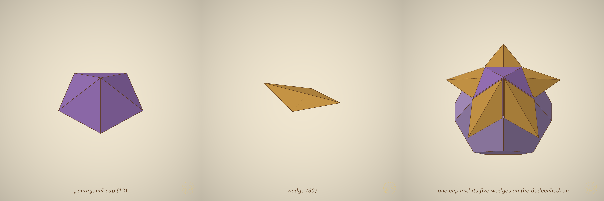
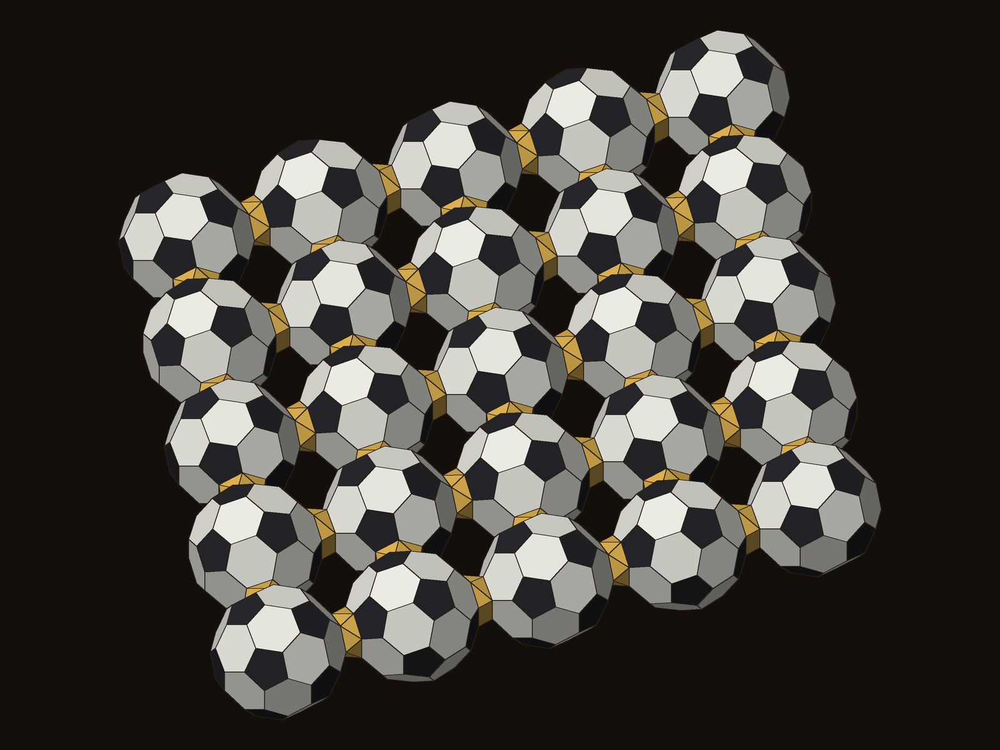

All five solids in every cell

Inside every octahedron of the octet sits Pacioli's icosahedron, inside that a dodecahedron, then the octahedron's own dual cube, then a tetrahedron; every tetrahedron of the octet holds the same nest at half size. One turn of the nest is exactly a third smaller: the golden numbers cancel.
Plato's Five in the Octet (#99)
The Sheriff and the Lone-star

Twelve Sheriffs and thirty Lone-stars fill the icosahedron round its dodecahedron exactly. The Sheriff's slant edges are √3/φ times its base; each Lone-star crosses an icosahedron edge with the dodecahedron edge beneath it at a right angle.
study 2026-11-06-five-in-octet
Icosahedra fill space at φ
Grow every icosahedron of the octet about its centre: neighbours touch at √5/2, the tetrahedral holes are reached at 3/2, and at exactly φ the overlapping icosahedra fill all of space, the octet's own corners last. The octet's version of EKP's crossing roofs forms beyond that: at 1 + √5/2 and φ².
study 2026-11-06-crossed-nest
A crystal becoming a quasicrystal

Rung by rung, cubic crystals of golden rhombohedra each a golden ratio larger: their diffraction turns from rows into ten-fold rings, 0.916 at 1/1, 0.9976 at 13/8, the quasicrystal 0.9977.
Plato's Five in the Octet (#99), Part 2
Why HexOct stacks freely and #47 does not
Regular solids of one edge barely fit together. Let the pieces deform and cubes and regular octahedra stack in every order: the freedom of stacking lives in two deformed pieces at the hexagonal layers, and nowhere else (DICTO's proposal).
study 2026-11-06-premise-challenge
Footballs joined pentagon to hexagon

A layer of footballs, each joined to four neighbours by bridges from a pentagon to a hexagon. With two orientations only, such links make chains; two crossing link lines at 79.19° make the layer.
study 2026-11-06-football-scutoids